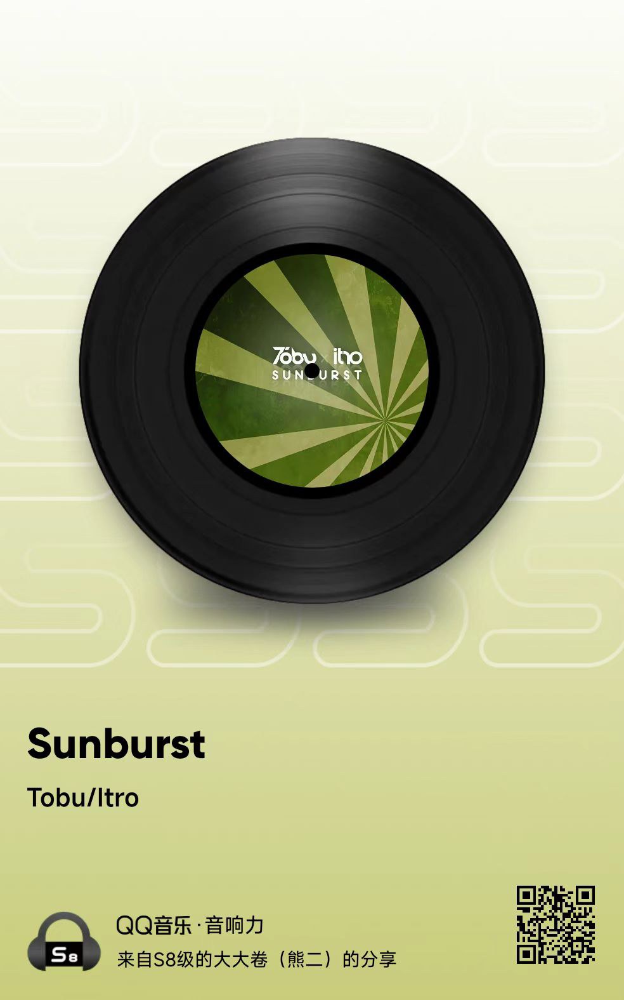
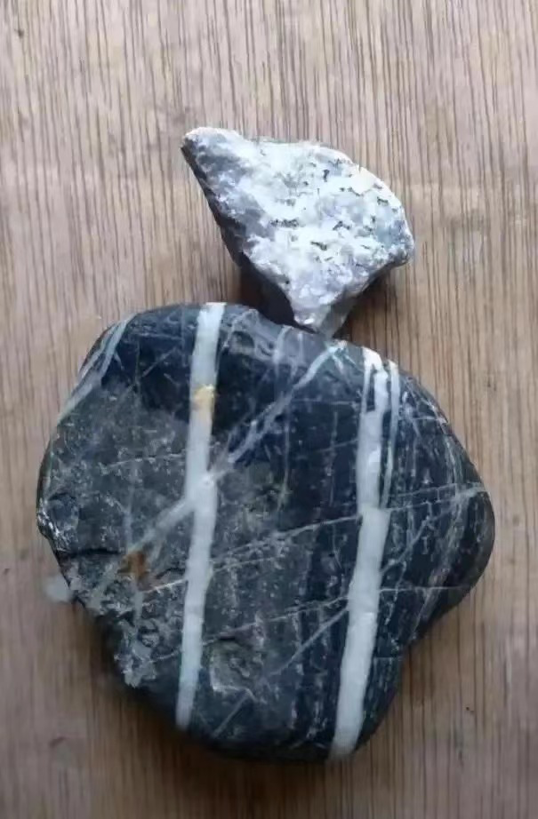
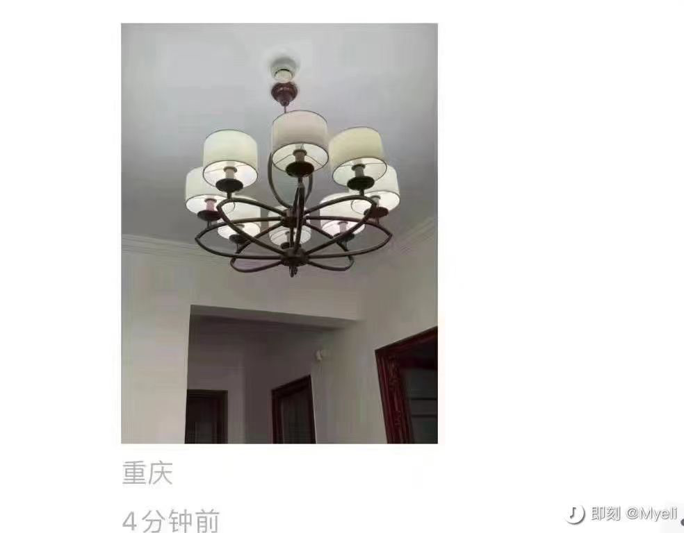

week - 36
[TOC]
带逛知乎
关于户籍的观点
美国堪萨斯的一个农民能不能在纽约定居成为市民？ - 倚阑看日暮的回答 - 知乎
户籍这玩意儿，不就是变相的国籍吗？
户籍制度把国内分成了大大小小的王国，安徽人可以免签到上海打工，但是不被视作当地人，不能买房安家，孩子上不了好的学校，老了也不能享受上海的养老待遇。学历高工资高的工作几年可以拿到上海户口，这不就是技术移民吗？
欧盟内的西班牙人要移民到柏林生活，移民难度不一定比一个安徽人要定居上海大吧？所以对个人来说，这个户籍政策，不就相当于国籍么。
关于美国分裂的观点
如何看待《经济学人》最新封面标语「美国成了『美利坚，分众国』」？美国在哪些问题上存在分裂？ - 飞跃本屯的回答 - 知乎
一个山寨只要能持续不断的抢夺财货，花都花不完，那所有的分裂都不是大事，因为抢下面村子要比和同伙火并安全的多。 如果山寨发现下面的村子不是修了炮楼就是穷的光屁股，那坏了，就算是大寨主与二寨主养的狗子互咬，都可能引发山寨的解体。 所以对美国而言，问题不是内部分裂，而是外部的抢劫环境如何了。 目前看还能抢劫到东西，但原来拿出枪晃悠下就能抢到，现在需要扫射一梭子才行。可山寨不产子弹，打一发少一发呀。
关于自信
一个人的自信从根本上来说靠的是什么？ - 请勿关注的回答 - 知乎
靠的是在自己的能力圈，甚至是舒适圈里，出圈的话不可能自信，不要信看得开，不在乎的理论，那最多是表面装样子。
所以想保持真正的自信要么不离开舒适圈，要么扩大能力圈，还有就是不出圈。
自信是好事，不自信也不是坏事，能一直冲出舒适圈，一直拓展能力圈的人才是真正的勇士。
勇士不是无畏的，能感到恐惧，又能面对恐惧才是有厉害的人，并不一定要战胜恐惧。
自信很容易盲目，保持恐惧，敬畏未知，可能比自信活的更真实一点。
过去心不可得，现在心不可得，未来心不可得
金刚经中的「过去心不可得，现在心不可得，未来心不可得」是什么意思？ - 陈昱达的回答 - 知乎
我的老婆在还是我女友的时候，曾经问过我：“我感觉你对我很好，但是又感觉你不在乎我，这是为什么？”。 我回答：“可能是因为我其实很在乎你的感受，但是我不在乎分手这件事，分手了我立刻再找一个”。 她生气地说：“你想得美！”。 果然她从这以后，没和我提过分手。 过去心不可得，现在心不可得，未来心不可得。 和前面的“应无所住而生其心”联系到一起，就能好理解一些。 无所住，是很高的修养。 容易搞混淆的地方是：把“无所住”当作“不在乎”。其实这两者差别非常大。 打个比方： 我对情爱很在乎，但我对情爱无所住，情爱就不是我的挂碍。 我对名利很在乎，但我对名利无所住，名利就不是我的挂碍。 我对知识很在乎，但我对知识无所住，知识就不是我的挂碍。 有啥表现，拿“名利”举例子。一个人做生意为了挣钱，利润越高越好，他很喜欢钱，很重视钱，挣到钱了就很开心。但是他不害怕亏钱，做生意有风险，害怕亏钱他岂不是事事裹足不前，怎么去挣更多的钱。这就叫于钱无所住。 害怕亏钱，就是住在钱上面了。 同样的道理，我热爱生命可以，但是脑子里总是怕死，就住在上面了。反而无法享受生命。 喜欢某个女人很好，但是害怕分手，就住在上面了。反而无法享受男欢女爱。 喜欢它的正面效果，不在乎它的负面效果。于是无所住，而生其心。 缘起缘灭，无心可住。既然已经无所住了，自然不会住在过去，现在，将来。于是验证了，过去心不可得，现在心不可得，未来心不可得。
沙雕海报
一曲肝肠断，天涯何处觅知音

一篇散文
作者：吹面不寒 链接：https://www.zhihu.com/question/538335062/answer/2661195589 来源：知乎 著作权归作者所有。商业转载请联系作者获得授权，非商业转载请注明出处。
前几天，有个好久不联系的朋友问我，“这些年，你过得还好吗？”
哈哈哈，当然过得很好呀。
因为在绝大多数情况下，我过得不好，也没有勇气说出来。
上个月一个平常的日子，我像往年一样，潦草的过完了自己今年的生日。
可能是我没有过生日的习惯吧，从小到大，都没有一个人记得过我的生日。
那天，我只是像往常一样，出去逛了逛，但给自己买了一推平时舍不得吃的零食。
晚上一个人漫步在晚风里，月光落在身前，夜幕下的路灯和飞虫都显得落寞。
过了生日，我今年就已经二十五岁了。
这个年纪，身边的人好像都在往前走。毕业工作，买车买房，甚至是结婚生子，似乎只有自己留在了原地。
我以为二十五岁的我，会像个大人一样，在风里雨里奔跑，却没想到喜怒哀乐仍在脸上。
走在路上被小朋友叫叔叔了，会不开心。妈妈没有给我买答应的东西，还会闹小情绪。
常常在路边和偶遇的猫咪对叫，看见漂亮的大胸妹子就想回头。望着天空漂浮的云朵，发呆、思考，想着一些不切实际的事情。
只是有时候，想找人出去散散步时，却发现好像已经没了，可以约出来的朋友了。
恍惚间发现，原来自己真的不是个孩子了。尤其是看着身边的同学、朋友陆续结婚生子，会莫名地感到心慌。
爸妈，好像也已没了当初的活力，自己却还不能好好地照顾自己。时间只是让我成长了年岁，却还没让我成为一个合格的大人。
以前，我不能理解年轻人的丧。在我的认知里，从小到大的教育就在告诉我，要用自己热爱的方式过这一生。
后来，我才明白，这只是一个理想的状态。
我们绝大多数的人，最终都会回到世俗的生活里，为家长里短，为柴米油盐烦恼着。
不知从哪一天开始，只是简单熬一下夜，第二天起来做事，就会浑身没劲。我知道那个曾经炙热的少年，就已经与我渐行渐远了。
可能成长，就是在不断地放下着东西。
后来，我渐渐学会了收起自己的锋芒，把委屈藏在心中，说话做事都有所顾虑。在处理问题时，早没了当初初生牛犊不怕虎的干劲……
隐忍妥协，但有时候又会庆幸自己，依旧有着世俗无法改变的东西。
比如说学不会抽烟喝酒，学不会逢迎欺骗，也有着自己的清高与小傲娇，还是那样喜欢沉浸在自己的世界里。
还是会有孩子的心性，比如说贪玩懒惰。
看着别人事业有成的时候，又会陷入焦虑，觉得自己这个样子不思进取，但却没了耐心和心思去学习。
其实，自己并不是个不喜欢分享的人。只是在大多数情况下，没人愿意聆听我的琐碎。
所以，我很沉默，一直都沉默。
就像是前几天，在微博上看见的热搜，朋友圈已经没了生活的痕迹。
是啊，看了看，自己好像已有大半年，没发过朋友圈了。
身边的绝大多数人，好像都选择了三天可见。
我觉得挺好的，因为现实里很少有人会真正关心你。大部分的人，根本不会多看一眼你的动态。
我们这一生，注定会被很多人路过，也会路过很多人。
可能只有等到哪天，真正遇见同频共振的那个人，才会像只刺猬样敞开心扉，让彼此看看内心深处，不为人知的优雅。
或许相遇的那天，我会因为历经孤独，而格外懂得珍惜。
以前我总以为，人生最美好的是相遇。后来才明白，其实最美好的可能是重逢。
因为人生里的很多告别，都是毫无征兆的。那些悄无声息的离开，或许是永久的沉默和不回头。
后来的我们，不再去追问心知肚明的答案，也不再轻易地将自己的情绪表露出来，开始尝试去做一个不动声色的大人。
那些曾以为生命之不能承受的事，就像是散落在风中的银杏叶，随着成长亦被岁月带走。
那些曾以为刻骨铭心的经历，或是痛苦难捱的日子。后来提及，两个字就足以概括。
从前，从前。
其实，自己这些年来，也并不是过得一点都不快乐。
比如说在路上遇见的快乐小狗，久违的文章动态还有人给我点赞，这些就足够让我快乐。
但又好像不算是真的快乐，只是在一阵短暂的欢愉后，就没了动静。再也没了那种小时候，可以为一件事期待好久好久，就算是得到了还会一直回味的感觉。
小时候的我无忧无虑，却总想着长大。长大后，却又开始怀恋小时候，或许是我还未做好准备，接纳成年人这个身份罢了。
我记得小时候，姥姥家的院子里，种着一颗大银杏树。每年春夏，枝头总是挂着一片绿意。等秋天一到，金灿灿的叶子就在风中招摇。
风将落叶带去远方，天空飘着的云很是明亮。
我只是安静地看着，邻居家那只爱趴在我家屋檐上，呼呼大睡的肥猫，就能虚度一下午的时光。
不知那时候，我们在树下一起追逐玩闹的孩子们。现在，你们怎么样了？这些年来，过得还好吗？
当我在写这篇文章时，正在为生活上的一地鸡毛而烦恼着。不知你们会不会也像我一样，在过去或未来的某个时刻，也在怀念着那个无忧的年代。
落叶随着风一阵摆动，家乡的银杏树一直都在，可是我已经回不去了。
一段旋律

一眼 ikun


科目三宇宙
赤壁赋
壬戌之秋，七月既望，苏子与客泛舟游于赤壁之下。清风徐来，水波不兴。举酒属客，诵明月之诗，歌窈窕之章。少焉，月出于东山之上，徘徊于斗牛之间。白露横江，水光接天。纵一苇之所如，凌万顷之茫然。浩浩乎如冯虚御风，而不知其所止；飘飘乎如遗世独立，羽化而登仙。
于是饮酒乐甚，扣舷而歌之。歌曰：“桂棹兮兰桨，击空明兮溯流光。渺渺兮予怀，望美人兮天一方。”客有吹洞箫者，倚歌而和之。其声呜呜然，如怨如慕，如泣如诉，余音袅袅，不绝如缕。舞幽壑之潜蛟，泣孤舟之嫠妇。
苏子愀然，正襟危坐而问客曰：“何为其然也？”客曰：“月明星稀，乌鹊南飞，此非曹孟德之诗乎？西望夏口，东望武昌，山川相缪，郁乎苍苍，此非孟德之困于周郎者乎？方其破荆州，下江陵，顺流而东也，舳舻千里，旌旗蔽空，酾酒临江，横槊赋诗，固一世之雄也，而今安在哉？况吾与子渔樵于江渚之上，侣鱼虾而友麋鹿，驾一叶之扁舟，举匏樽以相属。寄蜉蝣于天地，渺沧海之一粟。哀吾生之须臾，羡长江之无穷。挟飞仙以遨游，抱明月而长终。知不可乎骤得，托遗响于悲风。”
苏子曰：“客亦知夫水与月乎？逝者如斯，而未尝往也；盈虚者如彼，而卒莫消长也。盖将自其变者而观之，则天地曾不能以一瞬；自其不变者而观之，则物与我皆无尽也，而又何羡乎!且夫天地之间，物各有主,苟非吾之所有，虽一毫而莫取。惟江上之清风，与山间之明月，耳得之而为声，目遇之而成色，取之无禁，用之不竭，是造物者之无尽藏也，而吾与子之所共适。”
客喜而笑，洗盏更酌。肴核既尽，杯盘狼籍。相与枕藉乎舟中，不知东方之既白。